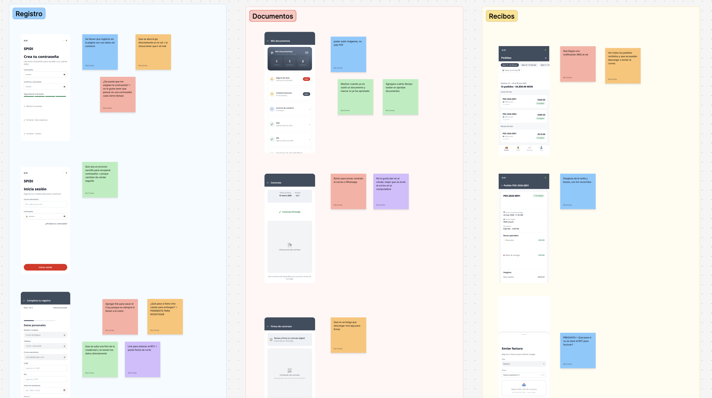
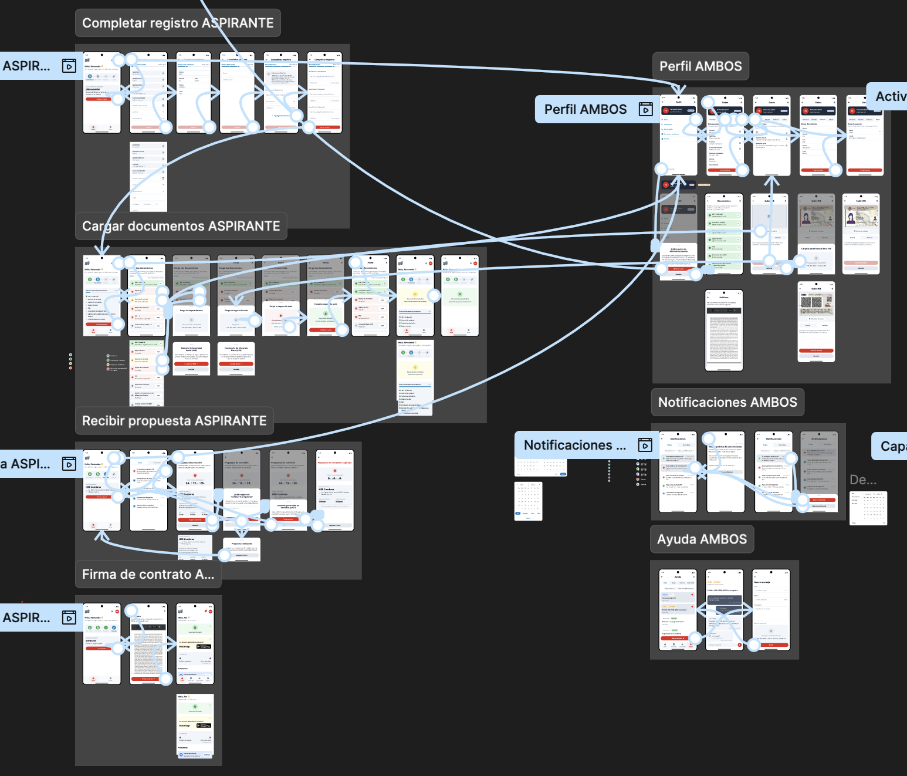
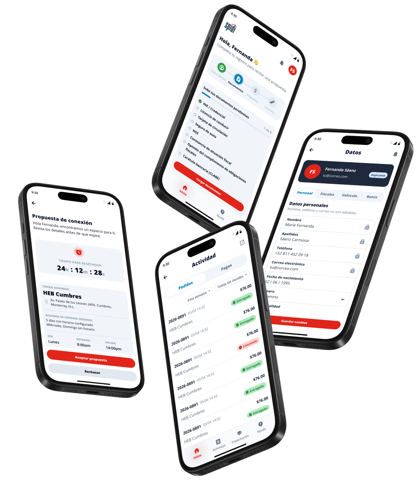

SPIDI
Driver onboarding app
Background
To support the launch of a new grocery delivery service, we needed a more streamlined onboarding process that would empower drivers to complete registration quickly and start delivering with confidence.
Goal
Simplify the onboarding journey, eliminate user friction, and provide clear, intuitive steps from sign-up to activation.
My role
As Product Designer, I led user research, information architecture, interaction design, and high-fidelity prototyping. I also leveraged AI design tools to accelerate the workflow and collaborated closely with the engineering team throughout development.
Key deliverables

Understanding the driver journey
We explored the primary needs, pain points, and barriers drivers encounter during registration and activation. To gather deep insights, we conducted qualitative interviews with 5 grocery delivery drivers.
Creating a simpler path to activation
Using Claude and GitHub Copilot to synthesize research data, we translated key insights into a user flow backed by industry benchmarks and best practices. The revised information architecture breaks complex requirements into clear, manageable steps:
- Online registration
- Document verification
- Store assignments & offer scheduling
- Initial driver onboarding & training
- Account management


Designing for confident first deliveries
Using Claude for rapid concept drafting and Figma for execution, we advanced wireframes into interactive, high-fidelity prototypes. Through rapid iteration cycles with the engineering team, we successfully delivered the launch-ready beta version of the app. The first release is currently queued for official deployment, after which we will initiate the next design and iteration cycle based on real-world user metrics.
Key Highlights:
- Frictionless Registration: Fast, mobile-first onboarding process.
- Requirements: Transparent guidelines on necessary documentation.
- Guidance: Step-by-step support throughout activation.
- Progress Visibility: Real-time feedback on application status.
- Account management: Direct access to training modules, payment history, and operational support messaging.